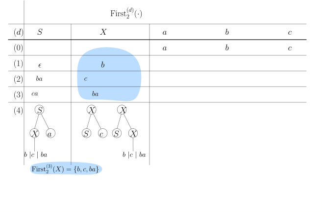

6.4 LL(./wly/06/04-LL1-grammars.wly:2:11$k$./wly/06/04-LL1-grammars.wly:2:14)-Grammatiken./wly/06/04-LL1-grammars.wly:2:19 (nicht im Sommersemester 2025)./wly/06/04-LL1-grammars.wly:2:19
Definition 6.4.1 Grenzform./wly/06/04-LL1-grammars.wly:4:5 Sei ./wly/06/04-LL1-grammars.wly:5:20$G = (\Sigma, N, S, P)$./wly/06/04-LL1-grammars.wly:5:25 eine./wly/06/04-LL1-grammars.wly:5:48 kontextfreie Grammatik. Eine Wortform ./wly/06/04-LL1-grammars.wly:6:9$A \alpha$./wly/06/04-LL1-grammars.wly:6:47 -./wly/06/04-LL1-grammars.wly:6:57 also eine Wortform, die mit einem Nichtterminal./wly/06/04-LL1-grammars.wly:7:9 beginnt - heißt ./wly/06/04-LL1-grammars.wly:8:9Grenzform./wly/06/04-LL1-grammars.wly:8:26,./wly/06/04-LL1-grammars.wly:8:36 wenn es ein./wly/06/04-LL1-grammars.wly:8:36 ./wly/06/04-LL1-grammars.wly:9:9$w \in \Sigma^*$./wly/06/04-LL1-grammars.wly:9:9 gibt, so dass es eine Linksableitung./wly/06/04-LL1-grammars.wly:9:25
$$
\begin{align*}
S \Step{}^* w A \alpha
\end{align*}
$$./wly/06/04-LL1-grammars.wly:11:9
gibt. In anderen Worten: eine Grenzform ist das, was./wly/06/04-LL1-grammars.wly:15:9 bei einem Kellerautomaten auf dem Stack liegt, wenn./wly/06/04-LL1-grammars.wly:16:9 ein Nichtterminal ganz oben liegt../wly/06/04-LL1-grammars.wly:17:9
Grenzformen sind also diejenigen Wortformen, bei./wly/06/04-LL1-grammars.wly:19:5 denen der Kellerautomat eine Entscheidung treffen./wly/06/04-LL1-grammars.wly:20:5 muss, weil er eventuell mehrere Produktionen./wly/06/04-LL1-grammars.wly:21:5 ./wly/06/04-LL1-grammars.wly:22:5$A \rightarrow \beta$./wly/06/04-LL1-grammars.wly:22:5 zur Auswahl hat. In diesem./wly/06/04-LL1-grammars.wly:22:26 Teilkapitel wollen wir herausarbeiten, unter welchen./wly/06/04-LL1-grammars.wly:23:5 Umständen wir die richtige Auswahl treffen können,./wly/06/04-LL1-grammars.wly:24:5 auch wenn wir nur wenige weitere Zeichen unseres./wly/06/04-LL1-grammars.wly:25:5 Inputwortes lesen dürfen../wly/06/04-LL1-grammars.wly:26:5
Definition 6.4.2./wly/06/04-LL1-grammars.wly:28:5 ./wly/06/04-LL1-grammars.wly:28:5 Für ein Wort ./wly/06/04-LL1-grammars.wly:29:9$w \in \Sigma^*$./wly/06/04-LL1-grammars.wly:29:22 und eine natürliche./wly/06/04-LL1-grammars.wly:29:38 Zahl ./wly/06/04-LL1-grammars.wly:30:9$k \in \N$./wly/06/04-LL1-grammars.wly:30:14 sei ./wly/06/04-LL1-grammars.wly:30:24$\first_k(w)$./wly/06/04-LL1-grammars.wly:30:29 wie folgt./wly/06/04-LL1-grammars.wly:30:42 definiert:./wly/06/04-LL1-grammars.wly:31:9
$$
\begin{align*}
\first_k(w) := \begin{cases}
w&\textnormal{ wenn $|w| \lt k$} \\
u&\textnormal{ wenn $w = uv$ und $|u| = k$}
\end{cases}
\end{align*}
$$./wly/06/04-LL1-grammars.wly:33:9
In Worten: ./wly/06/04-LL1-grammars.wly:40:9$\first_{k}(w)$./wly/06/04-LL1-grammars.wly:40:20 besteht aus den ersten ./wly/06/04-LL1-grammars.wly:40:35$k$./wly/06/04-LL1-grammars.wly:40:59 ./wly/06/04-LL1-grammars.wly:40:62 Zeichen von ./wly/06/04-LL1-grammars.wly:41:9$w$./wly/06/04-LL1-grammars.wly:41:21 (oder aus ganz ./wly/06/04-LL1-grammars.wly:41:24$w$./wly/06/04-LL1-grammars.wly:41:40,./wly/06/04-LL1-grammars.wly:41:43 falls es weniger./wly/06/04-LL1-grammars.wly:41:43 als ./wly/06/04-LL1-grammars.wly:42:9$k$./wly/06/04-LL1-grammars.wly:42:13 lang ist)../wly/06/04-LL1-grammars.wly:42:16
Definition 6.4.3 ./wly/06/04-LL1-grammars.wly:44:5LL(./wly/06/04-LL1-grammars.wly:44:5$k$./wly/06/04-LL1-grammars.wly:45:13)-Grammatiken./wly/06/04-LL1-grammars.wly:45:16 Eine kontextfreie Grammatik./wly/06/04-LL1-grammars.wly:45:30 ./wly/06/04-LL1-grammars.wly:46:9$G = (\Sigma, N, S, P)$./wly/06/04-LL1-grammars.wly:46:9 ist eine ./wly/06/04-LL1-grammars.wly:46:32LL(./wly/06/04-LL1-grammars.wly:46:32$k$./wly/06/04-LL1-grammars.wly:46:45 )-Grammatik,./wly/06/04-LL1-grammars.wly:46:48 wenn für jede Grenzform ./wly/06/04-LL1-grammars.wly:47:9$A \alpha$./wly/06/04-LL1-grammars.wly:47:33 und für jedes Paar./wly/06/04-LL1-grammars.wly:47:43
$$
\begin{align*}
A&\step{1} \beta \\
A&\step{2} \gamma
\end{align*}
$$./wly/06/04-LL1-grammars.wly:49:9
verschiedener Produktionen (also ./wly/06/04-LL1-grammars.wly:54:9$\beta \ne \gamma$./wly/06/04-LL1-grammars.wly:54:42)./wly/06/04-LL1-grammars.wly:54:60 ./wly/06/04-LL1-grammars.wly:54:60 folgendes gilt: wenn./wly/06/04-LL1-grammars.wly:55:9
$$
\begin{align*}
A\alpha&\Step{1} \beta \alpha \Step{}^* x \\
A\alpha&\Step{2} \gamma \alpha \Step{}^* y \\
\end{align*}
$$./wly/06/04-LL1-grammars.wly:57:9
dann müssen sich ./wly/06/04-LL1-grammars.wly:62:9$x$./wly/06/04-LL1-grammars.wly:62:26 und ./wly/06/04-LL1-grammars.wly:62:29$y$./wly/06/04-LL1-grammars.wly:62:34 in den ersten ./wly/06/04-LL1-grammars.wly:62:37$k$./wly/06/04-LL1-grammars.wly:62:52 ./wly/06/04-LL1-grammars.wly:62:55 Zeichen unterscheiden, also./wly/06/04-LL1-grammars.wly:63:9
$$
\begin{align*}
\first_k(x) \ne \first_k(y) \ .
\end{align*}
$$./wly/06/04-LL1-grammars.wly:65:9
Intuitiv gesprochen: wenn wir bereits eine ersten./wly/06/04-LL1-grammars.wly:69:5 Teil ./wly/06/04-LL1-grammars.wly:70:5$w$./wly/06/04-LL1-grammars.wly:70:10 unseres Zielwortes abgeleitet haben, dann./wly/06/04-LL1-grammars.wly:70:13 können wir die nächste anzuwendende Produktion./wly/06/04-LL1-grammars.wly:71:5 eindeutig bestimmen, indem wir die nächsten ./wly/06/04-LL1-grammars.wly:72:5$k$./wly/06/04-LL1-grammars.wly:72:49 ./wly/06/04-LL1-grammars.wly:72:52 Zeichen des Zielwortes lesen../wly/06/04-LL1-grammars.wly:73:5
Übungsaufgabe 6.4.1./wly/06/04-LL1-grammars.wly:75:5 ./wly/06/04-LL1-grammars.wly:75:5 Negieren Sie die Definition, d.h., schreiben Sie eine./wly/06/04-LL1-grammars.wly:76:9 Aussage der Form ./wly/06/04-LL1-grammars.wly:77:9Wenn ./wly/06/04-LL1-grammars.wly:77:27$G$./wly/06/04-LL1-grammars.wly:77:32 nicht ./wly/06/04-LL1-grammars.wly:77:35LL(./wly/06/04-LL1-grammars.wly:77:35$k$./wly/06/04-LL1-grammars.wly:77:45)./wly/06/04-LL1-grammars.wly:77:48 ist, dann./wly/06/04-LL1-grammars.wly:77:48 gibt es..../wly/06/04-LL1-grammars.wly:78:9
Beispiel 6.4.4./wly/06/04-LL1-grammars.wly:80:5 ./wly/06/04-LL1-grammars.wly:80:5 Die Klammern-Grammatik./wly/06/04-LL1-grammars.wly:81:9
$$
\begin{align*}
S&\step{1} \epsilon \\
S&\step{2} (S)S
\end{align*}
$$./wly/06/04-LL1-grammars.wly:83:9
ist LL(1)../wly/06/04-LL1-grammars.wly:88:9
Beweis. Folgen wir der Definition von LL(1): für jedes Paar./wly/06/04-LL1-grammars.wly:91:13 verschiedener Regeln muss etwas gelten. Wir haben hier./wly/06/04-LL1-grammars.wly:92:13 keine Auswahl, denn es gibt ja nur ein Paar. Also./wly/06/04-LL1-grammars.wly:93:13 müssen wir zeigen, dass, falls./wly/06/04-LL1-grammars.wly:94:13
$$
\begin{align*}
S \Step{}^* wS\alpha&\Step{1} w \alpha \Step{}^* w x \\
S \Step{}^* wS\alpha&\Step{2} w \texttt{(}S\texttt{)}S \alpha \Step{}^* w y \\
\end{align*}
$$./wly/06/04-LL1-grammars.wly:96:13
gilt, dann auch ./wly/06/04-LL1-grammars.wly:101:13$\first_1(x) \ne \first_2(y)$./wly/06/04-LL1-grammars.wly:101:29 gilt../wly/06/04-LL1-grammars.wly:101:58 Offensichtlich ist ./wly/06/04-LL1-grammars.wly:102:13$\first_2(y) =$./wly/06/04-LL1-grammars.wly:102:32 " ./wly/06/04-LL1-grammars.wly:102:47$\texttt{(}$./wly/06/04-LL1-grammars.wly:102:50"../wly/06/04-LL1-grammars.wly:102:62 ./wly/06/04-LL1-grammars.wly:102:62 Was kann ./wly/06/04-LL1-grammars.wly:103:13$\first_k(x)$./wly/06/04-LL1-grammars.wly:103:22 sein?./wly/06/04-LL1-grammars.wly:103:35
Behauptung../wly/06/04-LL1-grammars.wly:105:14 Wenn./wly/06/04-LL1-grammars.wly:105:26 ./wly/06/04-LL1-grammars.wly:106:13$S \rightarrow \delta \in (\Sigma \cup N)^*$./wly/06/04-LL1-grammars.wly:106:13,./wly/06/04-LL1-grammars.wly:106:57 dann./wly/06/04-LL1-grammars.wly:106:57 steht jedes ./wly/06/04-LL1-grammars.wly:107:13$S$./wly/06/04-LL1-grammars.wly:107:25 in ./wly/06/04-LL1-grammars.wly:107:28$\delta$./wly/06/04-LL1-grammars.wly:107:32 entweder am Ende von./wly/06/04-LL1-grammars.wly:107:40 ./wly/06/04-LL1-grammars.wly:108:13$\delta$./wly/06/04-LL1-grammars.wly:108:13 oder unmittelbar vor einem " ./wly/06/04-LL1-grammars.wly:108:21$\texttt{)}$./wly/06/04-LL1-grammars.wly:108:51"../wly/06/04-LL1-grammars.wly:108:63 ./wly/06/04-LL1-grammars.wly:108:63 Das folgt per Induktion über die Länge der Ableitung../wly/06/04-LL1-grammars.wly:109:13 Wenn es also für ./wly/06/04-LL1-grammars.wly:110:13$\delta$./wly/06/04-LL1-grammars.wly:110:30 gilt und wir die Produktion./wly/06/04-LL1-grammars.wly:110:38 ./wly/06/04-LL1-grammars.wly:111:13$S \rightarrow (S)S$./wly/06/04-LL1-grammars.wly:111:13 auf ./wly/06/04-LL1-grammars.wly:111:33$\delta$./wly/06/04-LL1-grammars.wly:111:38 anwenden, dann gilt./wly/06/04-LL1-grammars.wly:111:46 es für jedes "alte" ./wly/06/04-LL1-grammars.wly:112:13$S$./wly/06/04-LL1-grammars.wly:112:33 und auch für die beiden neu./wly/06/04-LL1-grammars.wly:112:36 erzeugten; wenn wir ./wly/06/04-LL1-grammars.wly:113:13$S \rightarrow \epsilon$./wly/06/04-LL1-grammars.wly:113:33 ./wly/06/04-LL1-grammars.wly:113:57 anwenden, dann verschwindet ein ./wly/06/04-LL1-grammars.wly:114:13$S$./wly/06/04-LL1-grammars.wly:114:45,./wly/06/04-LL1-grammars.wly:114:48 die Behauptung./wly/06/04-LL1-grammars.wly:114:48 gilt aber nach wie vor für alle anderen ./wly/06/04-LL1-grammars.wly:115:13$S$./wly/06/04-LL1-grammars.wly:115:53 in./wly/06/04-LL1-grammars.wly:115:56 ./wly/06/04-LL1-grammars.wly:116:13$\delta$./wly/06/04-LL1-grammars.wly:116:13../wly/06/04-LL1-grammars.wly:116:21 Wir folgern also, dass für das ./wly/06/04-LL1-grammars.wly:116:21$\alpha$./wly/06/04-LL1-grammars.wly:116:54 den./wly/06/04-LL1-grammars.wly:116:62 beiden obigne Herleitungen./wly/06/04-LL1-grammars.wly:117:13 ./wly/06/04-LL1-grammars.wly:118:13$\first_k(\alpha) \in \{\epsilon, \texttt{)}\}$./wly/06/04-LL1-grammars.wly:118:13 gilt../wly/06/04-LL1-grammars.wly:118:60 Keines davon ist ein Nichtterminal, und so muss auch./wly/06/04-LL1-grammars.wly:119:13 ./wly/06/04-LL1-grammars.wly:120:13$\first_k(\alpha) = \first_k(x)$./wly/06/04-LL1-grammars.wly:120:13 gelten../wly/06/04-LL1-grammars.wly:120:45 Zusammenfassend gesagt:./wly/06/04-LL1-grammars.wly:121:13
$$
\begin{align*}
\first_k(x)&\in \{\epsilon, \texttt{)}\} \\
\first_y(y)&= \texttt{(} \ ,
\end{align*}
$$./wly/06/04-LL1-grammars.wly:123:13
und somit sind sie verschieden. Wir folgern, dass ./wly/06/04-LL1-grammars.wly:128:13$G$./wly/06/04-LL1-grammars.wly:128:63 ./wly/06/04-LL1-grammars.wly:128:66 eine LL(1)-Grammatik ist../wly/06/04-LL1-grammars.wly:129:13A\(\square\)
Sehen Sie, dass die ./wly/06/04-LL1-grammars.wly:131:5LL(./wly/06/04-LL1-grammars.wly:131:5$k$./wly/06/04-LL1-grammars.wly:131:28)-Bedingung./wly/06/04-LL1-grammars.wly:131:31 der Aussage./wly/06/04-LL1-grammars.wly:131:31 "der Backtrack-Baum hat keine langen Sackgassen"./wly/06/04-LL1-grammars.wly:132:5 ähnelt (aber nicht völlig äquivalent dazu ist). Wenn./wly/06/04-LL1-grammars.wly:133:5 ./wly/06/04-LL1-grammars.wly:134:5$G$./wly/06/04-LL1-grammars.wly:134:5 eine LL( ./wly/06/04-LL1-grammars.wly:134:8$k$./wly/06/04-LL1-grammars.wly:134:18)-Grammatik./wly/06/04-LL1-grammars.wly:134:21 ist und wir den./wly/06/04-LL1-grammars.wly:134:21 Backtrack-Baum für ein Wort bauen, dann gilt: sobald./wly/06/04-LL1-grammars.wly:135:5 wir in einer Sackgasse ./wly/06/04-LL1-grammars.wly:136:5$k$./wly/06/04-LL1-grammars.wly:136:28 neue Terminalsymbole am./wly/06/04-LL1-grammars.wly:136:31 "Terminalpräfix" der Wortform hergeleitet haben,./wly/06/04-LL1-grammars.wly:137:5 merken wir, dass wir in einer Sackgasse sind. Mit./wly/06/04-LL1-grammars.wly:138:5 Terminalpräfix meine ich den längsten Präfix einer./wly/06/04-LL1-grammars.wly:139:5 Wortform, der ausschließlich aus Terminalen besteht../wly/06/04-LL1-grammars.wly:140:5 Allerdings muss nicht jeder Ableitungsschritt den./wly/06/04-LL1-grammars.wly:141:5 Terminalpräfix wachsen lassen (Regeln wie./wly/06/04-LL1-grammars.wly:142:5 ./wly/06/04-LL1-grammars.wly:143:5$X \rightarrow YbZ$./wly/06/04-LL1-grammars.wly:143:5 zum Beispiel ersetzen einfach das./wly/06/04-LL1-grammars.wly:143:24 erste Nichtterminal), aber "moralisch" geschieht etwas./wly/06/04-LL1-grammars.wly:144:5 ähnliches). Wenn umgekehrt eine Grammatik ./wly/06/04-LL1-grammars.wly:145:5nicht./wly/06/04-LL1-grammars.wly:145:48 LL(./wly/06/04-LL1-grammars.wly:145:54 ./wly/06/04-LL1-grammars.wly:146:5$k$./wly/06/04-LL1-grammars.wly:146:5)./wly/06/04-LL1-grammars.wly:146:8 ist, dann muss der Backtrack-Baum beiden./wly/06/04-LL1-grammars.wly:146:8 Ableitungen./wly/06/04-LL1-grammars.wly:147:5
$$
\begin{align*}
w A \alpha&\Rightarrow w \beta \alpha \\
w A \alpha&\Rightarrow w \gamma \alpha \\
\end{align*}
$$./wly/06/04-LL1-grammars.wly:149:5
mindestens so lange weiterverfolgen, bis der./wly/06/04-LL1-grammars.wly:154:5 Terminalpräfix ./wly/06/04-LL1-grammars.wly:155:5$k$./wly/06/04-LL1-grammars.wly:155:20 weitere Zeichen dazugewonnen hat../wly/06/04-LL1-grammars.wly:155:23 Der Baum bekommt also dementsprechend lange./wly/06/04-LL1-grammars.wly:156:5 Sackgassen../wly/06/04-LL1-grammars.wly:157:5
Übungsaufgabe 6.4.2./wly/06/04-LL1-grammars.wly:159:5 ./wly/06/04-LL1-grammars.wly:159:5 (Beispiel 5.3 aus ./wly/06/04-LL1-grammars.wly:160:9The Theory of Parsing,./wly/06/04-LL1-grammars.wly:160:28 Translation, and Compiling./wly/06/04-LL1-grammars.wly:161:9 von Alfred V. Aho und./wly/06/04-LL1-grammars.wly:161:36 Jeffrey D. Ullman). Betrachten wir die Grammatik./wly/06/04-LL1-grammars.wly:162:9
$$
\begin{align*}
S&\step{1} \epsilon \\
S&\step{2} ab A \\
A&\step{3} Saa \\
A&\step{4} b
\end{align*}
$$./wly/06/04-LL1-grammars.wly:164:9
Zeigen Sie, dass diese Grammatik LL(2) ist, aber./wly/06/04-LL1-grammars.wly:171:9 nicht LL(1). ./wly/06/04-LL1-grammars.wly:172:9Tip../wly/06/04-LL1-grammars.wly:172:23 Leiten Sie erst einmal ein Dutzend./wly/06/04-LL1-grammars.wly:172:28 verschiedene Wörter ab und finden dann eine./wly/06/04-LL1-grammars.wly:173:9 "normalsprachliche" Beschreibung dieser Sprache../wly/06/04-LL1-grammars.wly:174:9 Beschreiben Sie dann alle möglichen Wortformen./wly/06/04-LL1-grammars.wly:175:9 ./wly/06/04-LL1-grammars.wly:176:9$\alpha$./wly/06/04-LL1-grammars.wly:176:9 mit ./wly/06/04-LL1-grammars.wly:176:17$S \Step{}^* \alpha$./wly/06/04-LL1-grammars.wly:176:22../wly/06/04-LL1-grammars.wly:176:42
Übungsaufgabe 6.4.3./wly/06/04-LL1-grammars.wly:178:5 ./wly/06/04-LL1-grammars.wly:178:5 Schreiben Sie eine äquivalente Grammatik zu der./wly/06/04-LL1-grammars.wly:179:9 vorherigen Sprache, die LL(1) ist. (Warnung: Ich weiß./wly/06/04-LL1-grammars.wly:180:9 nicht, ob das überhaupt geht)../wly/06/04-LL1-grammars.wly:181:9
Übungsaufgabe 6.4.4./wly/06/04-LL1-grammars.wly:183:5 ./wly/06/04-LL1-grammars.wly:183:5 Betrachten wir die Grammatik ./wly/06/04-LL1-grammars.wly:185:9$G$./wly/06/04-LL1-grammars.wly:185:38:./wly/06/04-LL1-grammars.wly:185:41
$$
\begin{align*}
S&\step{1} a S b \\
S&\step{2} a S \\
S&\step{3} \epsilon
\end{align*}
$$./wly/06/04-LL1-grammars.wly:187:9
Sie erzeugt die Sprache./wly/06/04-LL1-grammars.wly:193:9
$$
\begin{align*}
L(G) := \{ a^{m+k} b^m \ | \ m, k \in \N \} \ ,
\end{align*}
$$./wly/06/04-LL1-grammars.wly:195:9
also Wörter, wo auf beliebig viele ./wly/06/04-LL1-grammars.wly:199:9$a$./wly/06/04-LL1-grammars.wly:199:44's./wly/06/04-LL1-grammars.wly:199:47 eine Folge./wly/06/04-LL1-grammars.wly:199:47 von ./wly/06/04-LL1-grammars.wly:200:9höchstens./wly/06/04-LL1-grammars.wly:200:14 so vielen ./wly/06/04-LL1-grammars.wly:200:24$b$./wly/06/04-LL1-grammars.wly:200:35's./wly/06/04-LL1-grammars.wly:200:38 folgt. Geben Sie./wly/06/04-LL1-grammars.wly:200:38 diese Grammatik in den./wly/06/04-LL1-grammars.wly:201:9 ./wly/06/04-LL1-grammars.wly:202:9Parser-Simulator./wly/06/04-LL1-grammars.wly:202:10 ./wly/06/04-LL1-grammars.wly:202:124 ein und finden Wörter mit langen Sackgassen. Zeigen./wly/06/04-LL1-grammars.wly:203:9 Sie, dass diese Grammatik nicht ./wly/06/04-LL1-grammars.wly:204:9LL./wly/06/04-LL1-grammars.wly:204:9$(k)$./wly/06/04-LL1-grammars.wly:204:43 ist, für kein./wly/06/04-LL1-grammars.wly:204:48 ./wly/06/04-LL1-grammars.wly:205:9$k \in \N$./wly/06/04-LL1-grammars.wly:205:9../wly/06/04-LL1-grammars.wly:205:19
Übungsaufgabe 6.4.5./wly/06/04-LL1-grammars.wly:207:5 ./wly/06/04-LL1-grammars.wly:207:5 Sei ./wly/06/04-LL1-grammars.wly:208:9$t \in \N$./wly/06/04-LL1-grammars.wly:208:13 eine feste, im Voraus bekannte Zahl../wly/06/04-LL1-grammars.wly:208:23 Betrachten wir die Sprache./wly/06/04-LL1-grammars.wly:209:9
$$
\begin{align*}
L_t := \{a^{m + l} b^m \ | \ m \geq 0, l \leq t\} \ ,
\end{align*}
$$./wly/06/04-LL1-grammars.wly:211:9
also die Wörter der Form ./wly/06/04-LL1-grammars.wly:215:9$a^m b^n$./wly/06/04-LL1-grammars.wly:215:34 mit./wly/06/04-LL1-grammars.wly:215:43 ./wly/06/04-LL1-grammars.wly:216:9$n \leq m \leq n+t$./wly/06/04-LL1-grammars.wly:216:9../wly/06/04-LL1-grammars.wly:216:28 Schreiben Sie für ./wly/06/04-LL1-grammars.wly:216:28$L_3$./wly/06/04-LL1-grammars.wly:216:48 eine./wly/06/04-LL1-grammars.wly:216:53 Grammatik, geben Sie diese im./wly/06/04-LL1-grammars.wly:217:9 ./wly/06/04-LL1-grammars.wly:218:9Parser-Simulator./wly/06/04-LL1-grammars.wly:218:10 ./wly/06/04-LL1-grammars.wly:218:119 ein und schauen, wie lang die Sackgassen werden./wly/06/04-LL1-grammars.wly:219:9 können. Zeigen Sie, dass ./wly/06/04-LL1-grammars.wly:220:9$L_3$./wly/06/04-LL1-grammars.wly:220:34 eine ./wly/06/04-LL1-grammars.wly:220:39LL./wly/06/04-LL1-grammars.wly:220:39$(k)$./wly/06/04-LL1-grammars.wly:220:47 ./wly/06/04-LL1-grammars.wly:220:52 -Grammatik ist. Für welchen Wert von ./wly/06/04-LL1-grammars.wly:221:9$k$./wly/06/04-LL1-grammars.wly:221:46?./wly/06/04-LL1-grammars.wly:221:49 Ist ./wly/06/04-LL1-grammars.wly:221:49$L_t$./wly/06/04-LL1-grammars.wly:221:55 ./wly/06/04-LL1-grammars.wly:221:60 (für im Voraus bekanntes ./wly/06/04-LL1-grammars.wly:222:9$t$./wly/06/04-LL1-grammars.wly:222:34 ) eine ./wly/06/04-LL1-grammars.wly:222:37LL./wly/06/04-LL1-grammars.wly:222:37$(k)$./wly/06/04-LL1-grammars.wly:222:47 ./wly/06/04-LL1-grammars.wly:222:52 -Grammatik? Für welchen Wert von ./wly/06/04-LL1-grammars.wly:223:9$k$./wly/06/04-LL1-grammars.wly:223:42?./wly/06/04-LL1-grammars.wly:223:45
LL./wly/06/04-LL1-grammars.wly:226:9$(k)$./wly/06/04-LL1-grammars.wly:226:11-Grammatiken./wly/06/04-LL1-grammars.wly:226:16 parsen./wly/06/04-LL1-grammars.wly:226:16
Wir wollen nun erarbeiten, wie wir für eine LL ./wly/06/04-LL1-grammars.wly:228:5$(k)$./wly/06/04-LL1-grammars.wly:228:52 ./wly/06/04-LL1-grammars.wly:228:57 -Grammatik einen Parser, also im Prinzip einen./wly/06/04-LL1-grammars.wly:229:5 deterministischen Pushdown-Automaten schreiben können../wly/06/04-LL1-grammars.wly:230:5 Wir tasten uns langsam voran. Wir beginnen mit einer./wly/06/04-LL1-grammars.wly:231:5 Verallgemeinerung von ./wly/06/04-LL1-grammars.wly:232:5$\first_k$./wly/06/04-LL1-grammars.wly:232:27 von Wörtern auf./wly/06/04-LL1-grammars.wly:232:37 ./wly/06/04-LL1-grammars.wly:233:5Wortformen./wly/06/04-LL1-grammars.wly:233:6 (die also Nichtterminale beinhalten./wly/06/04-LL1-grammars.wly:233:17 können)../wly/06/04-LL1-grammars.wly:234:5
Definition 6.4.5./wly/06/04-LL1-grammars.wly:236:5 ./wly/06/04-LL1-grammars.wly:236:5 Sei eine kontextfreie Grammatik./wly/06/04-LL1-grammars.wly:237:9 ./wly/06/04-LL1-grammars.wly:238:9$G = (\Sigma, N, S, P)$./wly/06/04-LL1-grammars.wly:238:9 und eine Wortform./wly/06/04-LL1-grammars.wly:238:32 ./wly/06/04-LL1-grammars.wly:239:9$\alpha \in (\Sigma \cup N)^*$./wly/06/04-LL1-grammars.wly:239:9 gegeben. Wir./wly/06/04-LL1-grammars.wly:239:39 definieren./wly/06/04-LL1-grammars.wly:240:9
$$
\begin{align*}
\First_k(\alpha) := \{ \first_k(w) \ | \ w \in \Sigma^*, \alpha \Step{}^* w\}
\end{align*}
$$./wly/06/04-LL1-grammars.wly:242:9
Wir können nun die ./wly/06/04-LL1-grammars.wly:246:5LL./wly/06/04-LL1-grammars.wly:246:5$(k)$./wly/06/04-LL1-grammars.wly:246:26-Bedingung./wly/06/04-LL1-grammars.wly:246:31 äquivalent./wly/06/04-LL1-grammars.wly:246:31 formulieren:./wly/06/04-LL1-grammars.wly:247:5
Definition / Beobachtung 6.4.6./wly/06/04-LL1-grammars.wly:249:5 ./wly/06/04-LL1-grammars.wly:249:5 Eine Grammatik ./wly/06/04-LL1-grammars.wly:251:9$G$./wly/06/04-LL1-grammars.wly:251:24 ist ./wly/06/04-LL1-grammars.wly:251:27LL./wly/06/04-LL1-grammars.wly:251:27$(k)$./wly/06/04-LL1-grammars.wly:251:34 genau dann, wenn für./wly/06/04-LL1-grammars.wly:251:39 alle Grenzformen ./wly/06/04-LL1-grammars.wly:252:9$A \alpha$./wly/06/04-LL1-grammars.wly:252:26 und alle Produktionen mit./wly/06/04-LL1-grammars.wly:252:36 ./wly/06/04-LL1-grammars.wly:253:9$A$./wly/06/04-LL1-grammars.wly:253:9 auf der linken Seite, also./wly/06/04-LL1-grammars.wly:253:12
$$
\begin{align*}
A&\rightarrow \beta_1 \\
A&\rightarrow \beta_2 \\
&\vdots\\
A&\rightarrow \beta_l
\end{align*}
$$./wly/06/04-LL1-grammars.wly:255:9
die Mengen ./wly/06/04-LL1-grammars.wly:262:9$\First(\beta_i \alpha)$./wly/06/04-LL1-grammars.wly:262:20 paarweise./wly/06/04-LL1-grammars.wly:262:44 disjunkt sind (wenn also keine zwei dieser Mengen ein./wly/06/04-LL1-grammars.wly:263:9 gemeinsames Element enthalten)../wly/06/04-LL1-grammars.wly:264:9
Nehmen wir eine Momentaufnahme unseres./wly/06/04-LL1-grammars.wly:266:5 Kellerautomaten. Er hat den Präfix ./wly/06/04-LL1-grammars.wly:267:5$x$./wly/06/04-LL1-grammars.wly:267:40 des./wly/06/04-LL1-grammars.wly:267:43 Eingabewortes ./wly/06/04-LL1-grammars.wly:268:5$xy$./wly/06/04-LL1-grammars.wly:268:19 gelesen und eine Linksableitung./wly/06/04-LL1-grammars.wly:268:23
$$
\begin{align*}
S \Rightarrow^*{} x \alpha
\end{align*}
$$./wly/06/04-LL1-grammars.wly:270:5
durchgeführt. Die Wortform ./wly/06/04-LL1-grammars.wly:274:5$\alpha$./wly/06/04-LL1-grammars.wly:274:32 ist genau das,./wly/06/04-LL1-grammars.wly:274:40 was im Moment auf dem Stack des Automaten liegt (um./wly/06/04-LL1-grammars.wly:275:5 ganz genau zu sein: ./wly/06/04-LL1-grammars.wly:276:5\(\alpha\texttt{\$}\)./wly/06/04-LL1-grammars.wly:276:25 liegt auf./wly/06/04-LL1-grammars.wly:276:46 dem Stack). Wenn ./wly/06/04-LL1-grammars.wly:277:5$\alpha$./wly/06/04-LL1-grammars.wly:277:22 mit einem Terminalsymbol ./wly/06/04-LL1-grammars.wly:277:30$c$./wly/06/04-LL1-grammars.wly:277:56 ./wly/06/04-LL1-grammars.wly:277:59 beginnt, so ist klar, was wir machen müssen: wir./wly/06/04-LL1-grammars.wly:278:5 schauen, ob ./wly/06/04-LL1-grammars.wly:279:5$y$./wly/06/04-LL1-grammars.wly:279:17 mit ./wly/06/04-LL1-grammars.wly:279:20$c$./wly/06/04-LL1-grammars.wly:279:25 beginnt. Wenn ja, lesen wir./wly/06/04-LL1-grammars.wly:279:28 ./wly/06/04-LL1-grammars.wly:280:5$c$./wly/06/04-LL1-grammars.wly:280:5 und poppen es vom Stack. Der schwierige Fall ist,./wly/06/04-LL1-grammars.wly:280:8 wenn ./wly/06/04-LL1-grammars.wly:281:5$\alpha$./wly/06/04-LL1-grammars.wly:281:10 mit einem Nichtterminal beginnt../wly/06/04-LL1-grammars.wly:281:18 Nochmal von vorn: im schwierigen Fall liegt auf dem./wly/06/04-LL1-grammars.wly:282:5 Stack (oberhalb vom ./wly/06/04-LL1-grammars.wly:283:5\(\$\)./wly/06/04-LL1-grammars.wly:283:25)./wly/06/04-LL1-grammars.wly:283:31 eine Wortform, die mit./wly/06/04-LL1-grammars.wly:283:31 einem Nichtterminal beginnt, also ./wly/06/04-LL1-grammars.wly:284:5$A \alpha$./wly/06/04-LL1-grammars.wly:284:39../wly/06/04-LL1-grammars.wly:284:49 Das./wly/06/04-LL1-grammars.wly:284:49 bedeutet, dass der Automat per Linksableitung bis./wly/06/04-LL1-grammars.wly:285:5 jetzt./wly/06/04-LL1-grammars.wly:286:5
$$
\begin{align*}
S \Step{}^* x A \alpha
\end{align*}
$$./wly/06/04-LL1-grammars.wly:288:5
hergeleitet hat. Der Automat muss sich nun zwischen./wly/06/04-LL1-grammars.wly:292:5 allen Regeln für ./wly/06/04-LL1-grammars.wly:293:5$A$./wly/06/04-LL1-grammars.wly:293:22 entscheiden:./wly/06/04-LL1-grammars.wly:293:25
$$
\begin{align*}
A&\rightarrow \beta_1 \\
A&\rightarrow \beta_2 \\
&\vdots\\
A&\rightarrow \beta_l \ .
\end{align*}
$$./wly/06/04-LL1-grammars.wly:295:5
Der Automat betrachtet nun die nächsten ./wly/06/04-LL1-grammars.wly:302:5$k$./wly/06/04-LL1-grammars.wly:302:45 ./wly/06/04-LL1-grammars.wly:302:48 Eingabesymbole, also ./wly/06/04-LL1-grammars.wly:303:5$\first_k(y)$./wly/06/04-LL1-grammars.wly:303:26 (wir gehen mal./wly/06/04-LL1-grammars.wly:303:39 davon aus, dass er das kann; programmieren könnten wir./wly/06/04-LL1-grammars.wly:304:5 das auf jeden Fall; ob man es im strengen Framework./wly/06/04-LL1-grammars.wly:305:5 des Kellerautomaten hinkriegt, werden wir später./wly/06/04-LL1-grammars.wly:306:5 sehen). Wenn ./wly/06/04-LL1-grammars.wly:307:5$G$./wly/06/04-LL1-grammars.wly:307:18 eine ./wly/06/04-LL1-grammars.wly:307:21LL./wly/06/04-LL1-grammars.wly:307:21$(k)$./wly/06/04-LL1-grammars.wly:307:29-Grammatik./wly/06/04-LL1-grammars.wly:307:34 ist, dann./wly/06/04-LL1-grammars.wly:307:34 gibt es höchstens eine Regel ./wly/06/04-LL1-grammars.wly:308:5$A \rightarrow \beta_i$./wly/06/04-LL1-grammars.wly:308:34 ./wly/06/04-LL1-grammars.wly:308:57 mit./wly/06/04-LL1-grammars.wly:309:5
$$
\begin{align*}
\first_k(y) \in \first_k(\beta_i \alpha)
\end{align*}
$$./wly/06/04-LL1-grammars.wly:311:5
da ja nach obiger Beobachtung diese Mengen disjunkt./wly/06/04-LL1-grammars.wly:315:5 sind. Wenn ./wly/06/04-LL1-grammars.wly:316:5$\first_k(y)$./wly/06/04-LL1-grammars.wly:316:16 in ./wly/06/04-LL1-grammars.wly:316:29keiner./wly/06/04-LL1-grammars.wly:316:34 dieser Mengen./wly/06/04-LL1-grammars.wly:316:41 enthalten ist, so kann die Ableitung offensichtlich./wly/06/04-LL1-grammars.wly:317:5 nicht vervollständigt werden, und wir schließen, dass./wly/06/04-LL1-grammars.wly:318:5 ./wly/06/04-LL1-grammars.wly:319:5$xy \not \in L(G)$./wly/06/04-LL1-grammars.wly:319:5 ist. Wenn es ./wly/06/04-LL1-grammars.wly:319:23genau ein./wly/06/04-LL1-grammars.wly:319:38 ./wly/06/04-LL1-grammars.wly:319:48$\beta_i$./wly/06/04-LL1-grammars.wly:319:49 ./wly/06/04-LL1-grammars.wly:319:58 gibt mit ./wly/06/04-LL1-grammars.wly:320:5$\first_k(y) \in \first_k(\beta_i \alpha)$./wly/06/04-LL1-grammars.wly:320:14,./wly/06/04-LL1-grammars.wly:320:56 ./wly/06/04-LL1-grammars.wly:320:56 dann ist ./wly/06/04-LL1-grammars.wly:321:5$A \rightarrow \beta_i$./wly/06/04-LL1-grammars.wly:321:14 die "richtige"./wly/06/04-LL1-grammars.wly:321:37 Produktion. Wir wenden sie an, ersetzen also ./wly/06/04-LL1-grammars.wly:322:5$A$./wly/06/04-LL1-grammars.wly:322:50 auf./wly/06/04-LL1-grammars.wly:322:53 dem Stack durch ./wly/06/04-LL1-grammars.wly:323:5$\beta_i$./wly/06/04-LL1-grammars.wly:323:21../wly/06/04-LL1-grammars.wly:323:30 Falls es zwei oder mehr./wly/06/04-LL1-grammars.wly:323:30 Produktionen ./wly/06/04-LL1-grammars.wly:324:5$A \rightarrow \beta_i$./wly/06/04-LL1-grammars.wly:324:18 gibt mit./wly/06/04-LL1-grammars.wly:324:41 ./wly/06/04-LL1-grammars.wly:325:5$\first_k(y) \in \first_k(\beta_i \alpha)$./wly/06/04-LL1-grammars.wly:325:5,./wly/06/04-LL1-grammars.wly:325:47 dann ist./wly/06/04-LL1-grammars.wly:325:47 die Grammatik nicht ./wly/06/04-LL1-grammars.wly:326:5LL./wly/06/04-LL1-grammars.wly:326:5$(k)$./wly/06/04-LL1-grammars.wly:326:27;./wly/06/04-LL1-grammars.wly:326:32 wir beenden den./wly/06/04-LL1-grammars.wly:326:32 Parsing-Prozess mit einer Laufzeitfehlermeldung. Hier./wly/06/04-LL1-grammars.wly:327:5 ist ein Entwurf eines allgemeinen Algorithmus für LL./wly/06/04-LL1-grammars.wly:328:5 ./wly/06/04-LL1-grammars.wly:329:5$(k)$./wly/06/04-LL1-grammars.wly:329:5-Grammatiken:./wly/06/04-LL1-grammars.wly:329:10
Generischer Algorithmus zum Parsen von LL$(k)$-Gramatiken
-
Lege ./wly/06/04-LL1-grammars.wly:335:17\(S\texttt{\$}\)./wly/06/04-LL1-grammars.wly:335:22 auf den Stack../wly/06/04-LL1-grammars.wly:335:38
-
while./wly/06/04-LL1-grammars.wly:338:18Stack nicht leer:./wly/06/04-LL1-grammars.wly:338:24-
Sei ./wly/06/04-LL1-grammars.wly:342:25$y$./wly/06/04-LL1-grammars.wly:342:29 das Resteingabewort../wly/06/04-LL1-grammars.wly:342:32
-
Wenn das oberste Symbol auf dem Stack ein./wly/06/04-LL1-grammars.wly:345:25 Terminalsymbol ./wly/06/04-LL1-grammars.wly:346:25$c$./wly/06/04-LL1-grammars.wly:346:40 ist:./wly/06/04-LL1-grammars.wly:346:43
-
Lies das nächste Eingabesymbol ./wly/06/04-LL1-grammars.wly:350:33$c'$./wly/06/04-LL1-grammars.wly:350:64../wly/06/04-LL1-grammars.wly:350:68
-
Wenn ./wly/06/04-LL1-grammars.wly:353:33$c = c'$./wly/06/04-LL1-grammars.wly:353:38,./wly/06/04-LL1-grammars.wly:353:46 poppe ./wly/06/04-LL1-grammars.wly:353:46$c$./wly/06/04-LL1-grammars.wly:353:54 vom Stack;./wly/06/04-LL1-grammars.wly:353:57
-
ansonsten ./wly/06/04-LL1-grammars.wly:356:33
Reject./wly/06/04-LL1-grammars.wly:356:44../wly/06/04-LL1-grammars.wly:356:51
-
-
Wenn das oberste Symbol auf dem Stack ein./wly/06/04-LL1-grammars.wly:359:25 Nichtterminalsymbol ./wly/06/04-LL1-grammars.wly:360:25$A$./wly/06/04-LL1-grammars.wly:360:45 ist:./wly/06/04-LL1-grammars.wly:360:48
-
Schreibe den Stack als ./wly/06/04-LL1-grammars.wly:364:33$A \alpha$./wly/06/04-LL1-grammars.wly:364:56
-
Seien./wly/06/04-LL1-grammars.wly:367:33 ./wly/06/04-LL1-grammars.wly:368:33$A \rightarrow \beta_1, \dots, A \rightarrow \beta_l$./wly/06/04-LL1-grammars.wly:368:33 ./wly/06/04-LL1-grammars.wly:368:86 alle Produktionen mit ./wly/06/04-LL1-grammars.wly:369:33$A$./wly/06/04-LL1-grammars.wly:369:55 auf der linken Seite../wly/06/04-LL1-grammars.wly:369:58
-
Berechne ./wly/06/04-LL1-grammars.wly:374:37$\First_k(\beta_i\alpha)$./wly/06/04-LL1-grammars.wly:374:46 für alle ./wly/06/04-LL1-grammars.wly:374:71$\beta_i$./wly/06/04-LL1-grammars.wly:374:81 ./wly/06/04-LL1-grammars.wly:374:90 und schaue, welches ./wly/06/04-LL1-grammars.wly:375:37$\first_k(y)$./wly/06/04-LL1-grammars.wly:375:57 enthält./wly/06/04-LL1-grammars.wly:375:70
-
Wenn es genau eine solche Produktion./wly/06/04-LL1-grammars.wly:379:41 ./wly/06/04-LL1-grammars.wly:380:41$A \rightarrow \beta_i$./wly/06/04-LL1-grammars.wly:380:41 gibt: wende Sie an; es ist./wly/06/04-LL1-grammars.wly:380:64 die richtige Produktion../wly/06/04-LL1-grammars.wly:381:41
-
Wenn es keine gibt: ./wly/06/04-LL1-grammars.wly:384:41
Reject./wly/06/04-LL1-grammars.wly:384:62../wly/06/04-LL1-grammars.wly:384:69 Das Wort kann nicht./wly/06/04-LL1-grammars.wly:384:69 abgeleitet werden../wly/06/04-LL1-grammars.wly:385:41 -
Wenn es mehrere gibt: ende mit einem Laufzeitfehler;./wly/06/04-LL1-grammars.wly:388:41 die Grammatik ist nicht ./wly/06/04-LL1-grammars.wly:389:41LL./wly/06/04-LL1-grammars.wly:389:41$(k)$./wly/06/04-LL1-grammars.wly:389:67../wly/06/04-LL1-grammars.wly:389:72
-
-
-
Wenn das oberste Symbol ./wly/06/04-LL1-grammars.wly:392:25\(\texttt{\$}\)./wly/06/04-LL1-grammars.wly:392:49 ist: wenn./wly/06/04-LL1-grammars.wly:392:64 Eingabewort zu Ende ./wly/06/04-LL1-grammars.wly:393:25
Accept./wly/06/04-LL1-grammars.wly:393:46ansonsten ./wly/06/04-LL1-grammars.wly:393:53Reject./wly/06/04-LL1-grammars.wly:393:65
-
Die rot und fett gedruckte Zeile ist das "Herz"./wly/06/04-LL1-grammars.wly:395:5 dieses Algorithmus. Um den Algorithmus implementieren./wly/06/04-LL1-grammars.wly:396:5 zu können, müssen wir es schaffen, die Menge./wly/06/04-LL1-grammars.wly:397:5 ./wly/06/04-LL1-grammars.wly:398:5$\First_k(\beta_i\alpha)$./wly/06/04-LL1-grammars.wly:398:5 zu berechnen../wly/06/04-LL1-grammars.wly:398:30
$\First_k(A)$./wly/06/04-LL1-grammars.wly:401:9 und ./wly/06/04-LL1-grammars.wly:401:22$\First_k(\alpha)$./wly/06/04-LL1-grammars.wly:401:27 berechnen../wly/06/04-LL1-grammars.wly:401:45
Definition 6.4.7./wly/06/04-LL1-grammars.wly:403:5 ./wly/06/04-LL1-grammars.wly:403:5 Seien ./wly/06/04-LL1-grammars.wly:404:9$K, L \subseteq \Sigma^*$./wly/06/04-LL1-grammars.wly:404:15 zwei Mengen. Mit./wly/06/04-LL1-grammars.wly:404:40 ./wly/06/04-LL1-grammars.wly:405:9$K \circ L$./wly/06/04-LL1-grammars.wly:405:9 bezeichnen wir die Menge./wly/06/04-LL1-grammars.wly:405:20
$$
\begin{align*}
K \circ L := \{xy \ | \ x \in K, y \in L\} \ .
\end{align*}
$$./wly/06/04-LL1-grammars.wly:407:9
(Diese Definition haben Sie schon im Kapitel über./wly/06/04-LL1-grammars.wly:411:9 reguläre Sprachen kennengelernt). Für eine natürliche./wly/06/04-LL1-grammars.wly:412:9 Zahl ./wly/06/04-LL1-grammars.wly:413:9$k$./wly/06/04-LL1-grammars.wly:413:14 definieren wir./wly/06/04-LL1-grammars.wly:413:17
$$
\begin{align*}
\First_k(L) := \{\first_k(x) \ | \ x \in L\} \ .
\end{align*}
$$./wly/06/04-LL1-grammars.wly:415:9
Weiterhin bezeichnen wir mit ./wly/06/04-LL1-grammars.wly:419:9$K \circ_k L$./wly/06/04-LL1-grammars.wly:419:38 die Menge./wly/06/04-LL1-grammars.wly:419:51
$$
\begin{align*}
K \circ_k L&:= \First(K \circ L) \\
&= \{\first_k(xy) \ | \ x \in K, y \in L\} \ .
\end{align*}
$$./wly/06/04-LL1-grammars.wly:421:9
Im Allgemeinen gilt./wly/06/04-LL1-grammars.wly:426:5 ./wly/06/04-LL1-grammars.wly:427:5$\First_k(S_1 \circ \dots \circ S_l) = S_1 \circ_k S_2 \circ_k \dots \circ_k S_l$./wly/06/04-LL1-grammars.wly:427:5../wly/06/04-LL1-grammars.wly:428:35 ./wly/06/04-LL1-grammars.wly:428:35 In Worten: der ./wly/06/04-LL1-grammars.wly:429:5$\circ_k$./wly/06/04-LL1-grammars.wly:429:20-Operator./wly/06/04-LL1-grammars.wly:429:29 bildet alle./wly/06/04-LL1-grammars.wly:429:29 möglichen Kombinationen von Wörtern und nimmt von./wly/06/04-LL1-grammars.wly:430:5 jedem die ersten ./wly/06/04-LL1-grammars.wly:431:5$k$./wly/06/04-LL1-grammars.wly:431:22 Zeichen../wly/06/04-LL1-grammars.wly:431:25
Beispiel 6.4.8./wly/06/04-LL1-grammars.wly:433:5 ./wly/06/04-LL1-grammars.wly:433:5 Sei./wly/06/04-LL1-grammars.wly:434:9
$$
\begin{align*}
K&:= \{\epsilon, a, ab, aba\} \\
L&:= \{c, bb, b\}
\end{align*}
$$./wly/06/04-LL1-grammars.wly:436:9
Dann ist./wly/06/04-LL1-grammars.wly:441:9
$$
\begin{align*}
K \circ L = \{c, bb, b, ac, abb, ab, abc, abbb, abb, abac, ababb, abab\}
\end{align*}
$$./wly/06/04-LL1-grammars.wly:443:9
und somit./wly/06/04-LL1-grammars.wly:447:9
$$
\begin{align*}
K \circ_2 L&= \{c, bb, b, ac, ab, ab, ab, ab, ab, ab, ab, ab\} \\
&=\{c, bb, b, ac, ab\}
\end{align*}
$$./wly/06/04-LL1-grammars.wly:449:9
Beobachtung 6.4.9 - wie man ./wly/06/04-LL1-grammars.wly:454:5$\First_k(\alpha)$./wly/06/04-LL1-grammars.wly:455:20 berechnet../wly/06/04-LL1-grammars.wly:455:38 Sei eine./wly/06/04-LL1-grammars.wly:455:50 Wortform ./wly/06/04-LL1-grammars.wly:456:9$\alpha$./wly/06/04-LL1-grammars.wly:456:18 gegeben, also./wly/06/04-LL1-grammars.wly:456:26 ./wly/06/04-LL1-grammars.wly:457:9$\alpha \in (\Sigma \cup N)^*$./wly/06/04-LL1-grammars.wly:457:9../wly/06/04-LL1-grammars.wly:457:39 Wir berechnen./wly/06/04-LL1-grammars.wly:457:39 ./wly/06/04-LL1-grammars.wly:458:9$\First_k(\alpha)$./wly/06/04-LL1-grammars.wly:458:9,./wly/06/04-LL1-grammars.wly:458:27 indem wir als erstes ./wly/06/04-LL1-grammars.wly:458:27$\alpha$./wly/06/04-LL1-grammars.wly:458:50 ./wly/06/04-LL1-grammars.wly:458:58 aussschreiben als./wly/06/04-LL1-grammars.wly:459:9
$$
\begin{align*}
\alpha = (\sigma_1 \sigma_2 \sigma_3 \dots \sigma_n)
\end{align*}
$$./wly/06/04-LL1-grammars.wly:461:9
wobei jedes ./wly/06/04-LL1-grammars.wly:465:9$\sigma_i$./wly/06/04-LL1-grammars.wly:465:21 ein Terminalsymbol oder ein./wly/06/04-LL1-grammars.wly:465:31 Nichtterminalsymbol ist, und berechnen dann./wly/06/04-LL1-grammars.wly:466:9 ./wly/06/04-LL1-grammars.wly:467:9$\First_k(\alpha)$./wly/06/04-LL1-grammars.wly:467:9 wie folgt:./wly/06/04-LL1-grammars.wly:467:27
$$
\begin{align}
\First_k(\alpha) = \First_k(\sigma_1) \circ_k \First_k(\sigma_2) \circ_k \dots \circ_k \First_k
(\sigma_n) \ .
\label{first-k-wortform}
\end{align}
$$./wly/06/04-LL1-grammars.wly:469:9
Wir können dies schön der Reihe nach tun:./wly/06/04-LL1-grammars.wly:475:9
-
Initialisiere ./wly/06/04-LL1-grammars.wly:479:17$K := \{\epsilon\}$./wly/06/04-LL1-grammars.wly:479:31
-
for./wly/06/04-LL1-grammars.wly:482:18./wly/06/04-LL1-grammars.wly:482:22$i=n$./wly/06/04-LL1-grammars.wly:482:23 ./wly/06/04-LL1-grammars.wly:482:28down to./wly/06/04-LL1-grammars.wly:482:301 ./wly/06/04-LL1-grammars.wly:482:38do:./wly/06/04-LL1-grammars.wly:482:42-
$K := \First_k(\sigma_i) \circ_k K$./wly/06/04-LL1-grammars.wly:486:25// ./wly/06/04-LL1-grammars.wly:489:29$K$./wly/06/04-LL1-grammars.wly:489:32 ist jetzt./wly/06/04-LL1-grammars.wly:489:35 ./wly/06/04-LL1-grammars.wly:490:29$\First_k(\sigma_i) \circ_k \dots \circ_k \First_k(\sigma_n)$./wly/06/04-LL1-grammars.wly:490:29
-
-
return./wly/06/04-LL1-grammars.wly:494:18./wly/06/04-LL1-grammars.wly:494:25$K$./wly/06/04-LL1-grammars.wly:494:26
Wir müssen nur noch herausfinden, wie wir./wly/06/04-LL1-grammars.wly:496:9 ./wly/06/04-LL1-grammars.wly:497:9$\First_k(\sigma)$./wly/06/04-LL1-grammars.wly:497:9 für einzelne Zeichen ./wly/06/04-LL1-grammars.wly:497:27$\sigma$./wly/06/04-LL1-grammars.wly:497:49 ./wly/06/04-LL1-grammars.wly:497:57 berechnen../wly/06/04-LL1-grammars.wly:498:9
Für ein Terminalsymbol ./wly/06/04-LL1-grammars.wly:500:5$c$./wly/06/04-LL1-grammars.wly:500:28 ist es trivial,./wly/06/04-LL1-grammars.wly:500:31 ./wly/06/04-LL1-grammars.wly:501:5$\First_k(c)$./wly/06/04-LL1-grammars.wly:501:5 zu berechnen: es ist ./wly/06/04-LL1-grammars.wly:501:18$\{c\}$./wly/06/04-LL1-grammars.wly:501:40,./wly/06/04-LL1-grammars.wly:501:47 da sich./wly/06/04-LL1-grammars.wly:501:47 aus ./wly/06/04-LL1-grammars.wly:502:5$c$./wly/06/04-LL1-grammars.wly:502:9 natürlich nur das Wort ./wly/06/04-LL1-grammars.wly:502:12$c$./wly/06/04-LL1-grammars.wly:502:36 ableiten lässt../wly/06/04-LL1-grammars.wly:502:39 Für Nichtterminale müssen wir uns anstrengen. Die./wly/06/04-LL1-grammars.wly:503:5 erste Idee ist, dass wir für ./wly/06/04-LL1-grammars.wly:504:5$\First_k(X)$./wly/06/04-LL1-grammars.wly:504:34 eine./wly/06/04-LL1-grammars.wly:504:47 Gleichung schreiben können, die./wly/06/04-LL1-grammars.wly:505:5 ./wly/06/04-LL1-grammars.wly:506:5$(\ref{first-k-wortform})$./wly/06/04-LL1-grammars.wly:506:5 verwendet../wly/06/04-LL1-grammars.wly:506:31
Beobachtung 6.4.10./wly/06/04-LL1-grammars.wly:508:5 ./wly/06/04-LL1-grammars.wly:508:5 Sei ./wly/06/04-LL1-grammars.wly:509:9$X$./wly/06/04-LL1-grammars.wly:509:13 ein Nichtterminal und./wly/06/04-LL1-grammars.wly:509:16
$$
\begin{align*}
X&\rightarrow \alpha_1 \\
X&\rightarrow \alpha_2 \\
&\vdots \\
X&\rightarrow \alpha_k
\end{align*}
$$./wly/06/04-LL1-grammars.wly:511:9
die Produktionen der Grammatik mit ./wly/06/04-LL1-grammars.wly:518:9$X$./wly/06/04-LL1-grammars.wly:518:44 auf der linken./wly/06/04-LL1-grammars.wly:518:47 Seite. Dann gilt./wly/06/04-LL1-grammars.wly:519:9
$$
\begin{align}
\First_k(X) = \bigcup_{i=1}^k \First_k(\alpha_i)
\label{first-k-nonterminal}
\end{align}
$$./wly/06/04-LL1-grammars.wly:521:9
Was ja eigentlich offensichtlich ist: wenn sich ein./wly/06/04-LL1-grammars.wly:526:9 Wort ./wly/06/04-LL1-grammars.wly:527:9$X \Step{}^* w$./wly/06/04-LL1-grammars.wly:527:14 aus ./wly/06/04-LL1-grammars.wly:527:29$X$./wly/06/04-LL1-grammars.wly:527:34 ableiten lässt, dann./wly/06/04-LL1-grammars.wly:527:37 muss dies mittels einer der obigen Produktionen./wly/06/04-LL1-grammars.wly:528:9 geschehen: ./wly/06/04-LL1-grammars.wly:529:9$X \Step{} \alpha_i \Step{}^* w$./wly/06/04-LL1-grammars.wly:529:20,./wly/06/04-LL1-grammars.wly:529:52 und./wly/06/04-LL1-grammars.wly:529:52 somit gilt ./wly/06/04-LL1-grammars.wly:530:9$\first_k(w)\in \First_k(\alpha_i)$./wly/06/04-LL1-grammars.wly:530:20../wly/06/04-LL1-grammars.wly:530:55
Die Gleichungen ./wly/06/04-LL1-grammars.wly:532:5$(\ref{first-k-wortform})$./wly/06/04-LL1-grammars.wly:532:21 und./wly/06/04-LL1-grammars.wly:532:47 ./wly/06/04-LL1-grammars.wly:533:5$(\ref{first-k-nonterminal})$./wly/06/04-LL1-grammars.wly:533:5 leuchten zwar ein,./wly/06/04-LL1-grammars.wly:533:34 scheinen aber erstmal nicht hilfreich, diese Mengen./wly/06/04-LL1-grammars.wly:534:5 auch tatsächlich zu berechnen. Denn eventuell taucht./wly/06/04-LL1-grammars.wly:535:5 ./wly/06/04-LL1-grammars.wly:536:5$X$./wly/06/04-LL1-grammars.wly:536:5 selbst wieder auf einer rechten Seite auf, sagen./wly/06/04-LL1-grammars.wly:536:8 wir ./wly/06/04-LL1-grammars.wly:537:5$\alpha_1$./wly/06/04-LL1-grammars.wly:537:9../wly/06/04-LL1-grammars.wly:537:19 Um ./wly/06/04-LL1-grammars.wly:537:19$\First_k(X)$./wly/06/04-LL1-grammars.wly:537:24 zu berechnen, müssen./wly/06/04-LL1-grammars.wly:537:37 wir also laut ./wly/06/04-LL1-grammars.wly:538:5$(\ref{first-k-nonterminal})$./wly/06/04-LL1-grammars.wly:538:19 die Menge./wly/06/04-LL1-grammars.wly:538:48 ./wly/06/04-LL1-grammars.wly:539:5$\First_k(\alpha_1)$./wly/06/04-LL1-grammars.wly:539:5 kennen; um diese zu berechnen,./wly/06/04-LL1-grammars.wly:539:25 brauchen wir laut ./wly/06/04-LL1-grammars.wly:540:5$(\ref{first-k-wortform})$./wly/06/04-LL1-grammars.wly:540:23 ./wly/06/04-LL1-grammars.wly:540:49 allerdings zuerst unter Anderem die Menge./wly/06/04-LL1-grammars.wly:541:5 ./wly/06/04-LL1-grammars.wly:542:5$\First_k(X)$./wly/06/04-LL1-grammars.wly:542:5../wly/06/04-LL1-grammars.wly:542:18 Wo sollen wir also anfangen? In./wly/06/04-LL1-grammars.wly:542:18 solchen Situationen, wo sich "die Katze in den Schwanz./wly/06/04-LL1-grammars.wly:543:5 beißt", hilft es oft, die Definition vorerst./wly/06/04-LL1-grammars.wly:544:5 ./wly/06/04-LL1-grammars.wly:545:5komplexere./wly/06/04-LL1-grammars.wly:545:6 un ./wly/06/04-LL1-grammars.wly:545:17genauer./wly/06/04-LL1-grammars.wly:545:22 zu machen. Wir führen nun,./wly/06/04-LL1-grammars.wly:545:30 zusätzlich zu ./wly/06/04-LL1-grammars.wly:546:5$\First_k(X)$./wly/06/04-LL1-grammars.wly:546:19 und ./wly/06/04-LL1-grammars.wly:546:32$\First_k(\alpha)$./wly/06/04-LL1-grammars.wly:546:37,./wly/06/04-LL1-grammars.wly:546:55 ./wly/06/04-LL1-grammars.wly:546:55 noch eine feinere Unterteilung an:./wly/06/04-LL1-grammars.wly:547:5
Definition 6.4.11./wly/06/04-LL1-grammars.wly:549:5 ./wly/06/04-LL1-grammars.wly:549:5 Sei ./wly/06/04-LL1-grammars.wly:550:9$\sigma$./wly/06/04-LL1-grammars.wly:550:13 ein Symbol und ./wly/06/04-LL1-grammars.wly:550:21$d \in \N$./wly/06/04-LL1-grammars.wly:550:37../wly/06/04-LL1-grammars.wly:550:47 Dann ist./wly/06/04-LL1-grammars.wly:550:47
$$
\begin{align*}
\First_k^{(d)}(\sigma) := \{\first_k(w) \ | \ \textnormal{ es gibt einen Ableitungsbaum für
$\sigma \Step{}^* w$ der Höhe höchstens $d$}\}
\end{align*}
$$./wly/06/04-LL1-grammars.wly:552:9
Beispiel 6.4.12./wly/06/04-LL1-grammars.wly:557:5 ./wly/06/04-LL1-grammars.wly:557:5 Sei unsere Grammatik./wly/06/04-LL1-grammars.wly:558:9
$$
\begin{align*}
S&\rightarrow Xa \\
X&\rightarrow Sb \ | c
\end{align*}
$$./wly/06/04-LL1-grammars.wly:560:9
Dann ist beispielsweise./wly/06/04-LL1-grammars.wly:565:9
 public/img/context-free/LL/tree-depth-2.svg
public/img/context-free/LL/tree-depth-2.svg
ein Ableitungsbaum der Höhe 2 von ./wly/06/04-LL1-grammars.wly:572:9$S \Step{}^* ca$./wly/06/04-LL1-grammars.wly:572:43 ,./wly/06/04-LL1-grammars.wly:572:59 und somit gilt./wly/06/04-LL1-grammars.wly:573:9
$$
\begin{align*}
c \in \First_1^{(d)} (S) \ .
\end{align*}
$$./wly/06/04-LL1-grammars.wly:575:9
Ein Baum der Höhe 1, der mit ./wly/06/04-LL1-grammars.wly:579:9$S$./wly/06/04-LL1-grammars.wly:579:38 beginnt, könnte ja./wly/06/04-LL1-grammars.wly:579:41 nur ./wly/06/04-LL1-grammars.wly:580:9$Xa$./wly/06/04-LL1-grammars.wly:580:13 ableiten und somit gar kein Wort. Es gilt./wly/06/04-LL1-grammars.wly:580:17 also./wly/06/04-LL1-grammars.wly:581:9
$$
\begin{align*}
\First_1^{(1)} (S) = \emptyset \ .
\end{align*}
$$./wly/06/04-LL1-grammars.wly:583:9
Für eine Wortform./wly/06/04-LL1-grammars.wly:587:9 ./wly/06/04-LL1-grammars.wly:588:9$\alpha = \sigma_1 \sigma_2 \dots \sigma_n \in (\Sigma \cup N)^*$./wly/06/04-LL1-grammars.wly:588:9 ./wly/06/04-LL1-grammars.wly:589:27 definieren wir./wly/06/04-LL1-grammars.wly:590:9
$$
\begin{align*}
\First_k^{(d)}(\alpha) = \First_k^{(d)}(\sigma_1) \circ_k \First_k^{(d)}(\sigma_2) \circ_k \dots
\circ_k \First_k^{(d)}
\end{align*}
$$./wly/06/04-LL1-grammars.wly:592:9
Eine Ableitung ./wly/06/04-LL1-grammars.wly:597:9$\alpha \Step{}^* w$./wly/06/04-LL1-grammars.wly:597:24 der Höhe maximal./wly/06/04-LL1-grammars.wly:597:44 ./wly/06/04-LL1-grammars.wly:598:9$d$./wly/06/04-LL1-grammars.wly:598:9 entspricht also einer Folge von ./wly/06/04-LL1-grammars.wly:598:12$n$./wly/06/04-LL1-grammars.wly:598:45 ./wly/06/04-LL1-grammars.wly:598:48 Ableitungsbäumen, von denen jeder Höhe maximal ./wly/06/04-LL1-grammars.wly:599:9$d$./wly/06/04-LL1-grammars.wly:599:56 ./wly/06/04-LL1-grammars.wly:599:59 hat../wly/06/04-LL1-grammars.wly:600:9
Mit dieser Definition können wir nun Gleichungen für./wly/06/04-LL1-grammars.wly:602:5 ./wly/06/04-LL1-grammars.wly:603:5$\First_k^{(d)}(X)$./wly/06/04-LL1-grammars.wly:603:5 und ./wly/06/04-LL1-grammars.wly:603:24$\First_k^{(d)}(\alpha)$./wly/06/04-LL1-grammars.wly:603:29 ./wly/06/04-LL1-grammars.wly:603:53 angeben. Seien./wly/06/04-LL1-grammars.wly:604:5 ./wly/06/04-LL1-grammars.wly:605:5$X \rightarrow \alpha_1 \ | \ \dots \ | \ \alpha_k$./wly/06/04-LL1-grammars.wly:605:5 ./wly/06/04-LL1-grammars.wly:605:56 die Produktionen mit ./wly/06/04-LL1-grammars.wly:606:5$X$./wly/06/04-LL1-grammars.wly:606:26 auf der linken Seite. Dann./wly/06/04-LL1-grammars.wly:606:29 gilt für ./wly/06/04-LL1-grammars.wly:607:5$k \geq 1$./wly/06/04-LL1-grammars.wly:607:14:./wly/06/04-LL1-grammars.wly:607:24
Lemma 6.4.13./wly/06/04-LL1-grammars.wly:609:5 ./wly/06/04-LL1-grammars.wly:609:5 Für ./wly/06/04-LL1-grammars.wly:610:9$d \geq 1$./wly/06/04-LL1-grammars.wly:610:13 gilt./wly/06/04-LL1-grammars.wly:610:23
$$
\begin{align*}
\First_k^{(d)}(X)&= \bigcup_{i=1}^k \First_k^{(d-1)} (\alpha_i) \\
\First_k^{(d)}(\alpha)&= \First_k^{(d)}(\sigma_1) \circ_k \First_k^{(d)}(\sigma_2) \circ_k
\dots \circ_k \First_k^{(d)}
\end{align*}
$$./wly/06/04-LL1-grammars.wly:612:9
Für ./wly/06/04-LL1-grammars.wly:618:9$d = 0$./wly/06/04-LL1-grammars.wly:618:13 gilt./wly/06/04-LL1-grammars.wly:618:20
$$
\begin{align*}
\First_k^{(0)}(X)&:= \emptyset \tag{für jedes Nichtterminal}
\end{align*}
$$./wly/06/04-LL1-grammars.wly:620:9
und schließlich./wly/06/04-LL1-grammars.wly:624:9
$$
\begin{align*}
\First_k^{(d)}(a)&:= \{a\} \tag{für jedes Terminalsymbol und jedes \(d \in \N\)}
\end{align*}
$$./wly/06/04-LL1-grammars.wly:626:9
Die Gleichungen sagen, dass wir, falls wir./wly/06/04-LL1-grammars.wly:630:5 ./wly/06/04-LL1-grammars.wly:631:5$\First_{k}^{(d-1)}(X)$./wly/06/04-LL1-grammars.wly:631:5 für alle Nichtterminale./wly/06/04-LL1-grammars.wly:631:28 kennen, dann auch ./wly/06/04-LL1-grammars.wly:632:5$\First_{k}^{(d)}(X)$./wly/06/04-LL1-grammars.wly:632:23 berechnen./wly/06/04-LL1-grammars.wly:632:44 können. Daraus folgt auch: wenn./wly/06/04-LL1-grammars.wly:633:5 ./wly/06/04-LL1-grammars.wly:634:5$\First_{k}^{(d-1)}(X)=\First_{k}^{(d)}(X)$./wly/06/04-LL1-grammars.wly:634:5 für alle./wly/06/04-LL1-grammars.wly:634:48 ./wly/06/04-LL1-grammars.wly:635:5$X \in N$./wly/06/04-LL1-grammars.wly:635:5,./wly/06/04-LL1-grammars.wly:635:14 dann auch./wly/06/04-LL1-grammars.wly:635:14 ./wly/06/04-LL1-grammars.wly:636:5$\First_{k}^{(d)}(X)=\First_{k}^{(d+1)}(X)$./wly/06/04-LL1-grammars.wly:636:5 für alle./wly/06/04-LL1-grammars.wly:636:48 ./wly/06/04-LL1-grammars.wly:637:5$X \in N$./wly/06/04-LL1-grammars.wly:637:5,./wly/06/04-LL1-grammars.wly:637:14 und somit werden die Mengen./wly/06/04-LL1-grammars.wly:637:14 ./wly/06/04-LL1-grammars.wly:638:5$\First_{k}^{(d)}(X)$./wly/06/04-LL1-grammars.wly:638:5 für alle ./wly/06/04-LL1-grammars.wly:638:26$d$./wly/06/04-LL1-grammars.wly:638:36 von nun an gleich./wly/06/04-LL1-grammars.wly:638:39 bleiben../wly/06/04-LL1-grammars.wly:639:5
Beobachtung 6.4.14./wly/06/04-LL1-grammars.wly:641:5 ./wly/06/04-LL1-grammars.wly:641:5 Falls ./wly/06/04-LL1-grammars.wly:642:9$\First_{k}^{(d-1)}(X)=\First_{k}^{(d)}(X)$./wly/06/04-LL1-grammars.wly:642:15 für./wly/06/04-LL1-grammars.wly:642:58 alle ./wly/06/04-LL1-grammars.wly:643:9$X \in N$./wly/06/04-LL1-grammars.wly:643:14,./wly/06/04-LL1-grammars.wly:643:23 dann gilt./wly/06/04-LL1-grammars.wly:643:23
$$
\begin{align*}
\First_k (X) = \First_k^{(d)}(X)
\end{align*}
$$./wly/06/04-LL1-grammars.wly:645:9
für alle ./wly/06/04-LL1-grammars.wly:649:9$X \in N$./wly/06/04-LL1-grammars.wly:649:18../wly/06/04-LL1-grammars.wly:649:27
Demo 6.4.15 - Berechnung der Menge ./wly/06/04-LL1-grammars.wly:651:5$\First_k(A)$./wly/06/04-LL1-grammars.wly:652:33 für die./wly/06/04-LL1-grammars.wly:652:46 Nichtterminale einer Sprache../wly/06/04-LL1-grammars.wly:653:9 Wir betrachten die./wly/06/04-LL1-grammars.wly:653:39 Grammatik./wly/06/04-LL1-grammars.wly:654:9
$$
\begin{align*}
S&\rightarrow Xa \ | \ \epsilon \\
X&\rightarrow b \ | \ Sc \ | \ SX
\end{align*}
$$./wly/06/04-LL1-grammars.wly:656:9
 public/img/context-free/LL/compute-first-2/01.svg
public/img/context-free/LL/compute-first-2/01.svg
 public/img/context-free/LL/compute-first-2/02.svg
public/img/context-free/LL/compute-first-2/02.svg
 public/img/context-free/LL/compute-first-2/03.svg
public/img/context-free/LL/compute-first-2/03.svg
 public/img/context-free/LL/compute-first-2/04.svg
public/img/context-free/LL/compute-first-2/04.svg
public/img/context-free/LL/compute-first-2/05.svg
 public/img/context-free/LL/compute-first-2/06.svg
public/img/context-free/LL/compute-first-2/06.svg
public/img/context-free/LL/compute-first-2/07.svg
 public/img/context-free/LL/compute-first-2/08.svg
public/img/context-free/LL/compute-first-2/08.svg
public/img/context-free/LL/compute-first-2/09.svg
 public/img/context-free/LL/compute-first-2/10.svg
public/img/context-free/LL/compute-first-2/10.svg
 public/img/context-free/LL/compute-first-2/11.svg
public/img/context-free/LL/compute-first-2/11.svg
 public/img/context-free/LL/compute-first-2/12.svg
public/img/context-free/LL/compute-first-2/12.svg
 public/img/context-free/LL/compute-first-2/13.svg
public/img/context-free/LL/compute-first-2/13.svg
public/img/context-free/LL/compute-first-2/14.svg
 public/img/context-free/LL/compute-first-2/15.svg
public/img/context-free/LL/compute-first-2/15.svg
 public/img/context-free/LL/compute-first-2/16.svg
public/img/context-free/LL/compute-first-2/16.svg
public/img/context-free/LL/compute-first-2/17.svg
public/img/context-free/LL/compute-first-2/18.svg
 public/img/context-free/LL/compute-first-2/19.svg
public/img/context-free/LL/compute-first-2/19.svg
 public/img/context-free/LL/compute-first-2/20.svg
public/img/context-free/LL/compute-first-2/20.svg
 public/img/context-free/LL/compute-first-2/21.svg
public/img/context-free/LL/compute-first-2/21.svg
public/img/context-free/LL/compute-first-2/22.svg
 public/img/context-free/LL/compute-first-2/23.svg
public/img/context-free/LL/compute-first-2/23.svg
public/img/context-free/LL/compute-first-2/24.svg
 public/img/context-free/LL/compute-first-2/25.svg
public/img/context-free/LL/compute-first-2/25.svg
 public/img/context-free/LL/compute-first-2/26.svg
public/img/context-free/LL/compute-first-2/26.svg
 public/img/context-free/LL/compute-first-2/27.svg
public/img/context-free/LL/compute-first-2/27.svg
 public/img/context-free/LL/compute-first-2/28.svg
public/img/context-free/LL/compute-first-2/28.svg
public/img/context-free/LL/compute-first-2/29.svg
public/img/context-free/LL/compute-first-2/30.svg
public/img/context-free/LL/compute-first-2/30.svg
public/img/context-free/LL/compute-first-2/31.svg
 public/img/context-free/LL/compute-first-2/32.svg
public/img/context-free/LL/compute-first-2/32.svg
 public/img/context-free/LL/compute-first-2/33.svg
public/img/context-free/LL/compute-first-2/33.svg
 public/img/context-free/LL/compute-first-2/34.svg
public/img/context-free/LL/compute-first-2/34.svg
public/img/context-free/LL/compute-first-2/35.svg
public/img/context-free/LL/compute-first-2/36.svg
 public/img/context-free/LL/compute-first-2/37.svg
public/img/context-free/LL/compute-first-2/37.svg
 public/img/context-free/LL/compute-first-2/38.svg
public/img/context-free/LL/compute-first-2/38.svg
 public/img/context-free/LL/compute-first-2/39.svg
public/img/context-free/LL/compute-first-2/39.svg
 public/img/context-free/LL/compute-first-2/40.svg
public/img/context-free/LL/compute-first-2/40.svg
 public/img/context-free/LL/compute-first-2/41.svg
public/img/context-free/LL/compute-first-2/41.svg
 public/img/context-free/LL/compute-first-2/42.svg
public/img/context-free/LL/compute-first-2/42.svg
 public/img/context-free/LL/compute-first-2/43.svg
public/img/context-free/LL/compute-first-2/43.svg
public/img/context-free/LL/compute-first-2/44.svg
 public/img/context-free/LL/compute-first-2/45.svg
public/img/context-free/LL/compute-first-2/45.svg
public/img/context-free/LL/compute-first-2/46.svg
public/img/context-free/LL/compute-first-2/47.svg
 public/img/context-free/LL/compute-first-2/48.svg
public/img/context-free/LL/compute-first-2/48.svg
public/img/context-free/LL/compute-first-2/49.svg